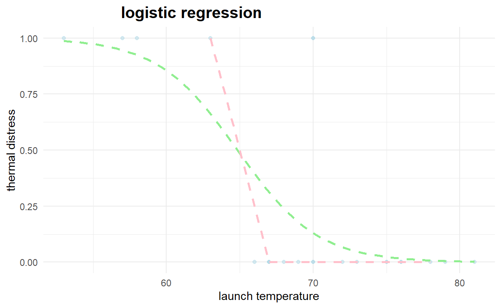

Game Plan
In previous sections, we have seen how to perform linear regression on input data to predict a continuous value. In some cases, however, we wish to predict a categorical value, such as True/False or Yes/No.Traditional regression methods are not optimal for these problems, since this requires the prediction of a discrete and not continuous value. In this section we introduce a technique that simulates linear regression, but with an additional function employed that maps the continuous value predicted by linear regression methods into a probability, or specifically the range [0,1]. In this manner, we can apply a threshold to this probability to predict a binary response.
While several functions might be suitable for this transformation, the most popular function is the logit function. Note that some older analyses might reference the probit function. Performing regression by using the logit function is known as logistic regression (the inverse of the logit function is known as the logistic function). The name might seem confusing since technically this algorithm is used to perform classification, but since logistic regression borrows heavily in its approach from linear regression, the descriptive name was maintained. A major benefit of logistic regression is the creation of a parametric model that can be explored to understand why predictions are made, in the same manner as a linear regression model.
In this section, we introduce the logit function and how it can be used to construct a binary model. Next, we introduce logistic regression, and specifically show how logistic regression can be performed. We also introduce several popular performance metrics and show how they can be calculated for binary classification tasks. We demonstrate logistic regression on several data sets, including one that contains categorical features. We also demonstrate how to perform logistic regression. Finally, we discuss topics such as marginal effects and odds ratios, which are concepts that often prove useful in interpreting logistic regression models.
Formalism
In a binary classification process, we have two possible outcomes, which for the sake of generality, we can label as Success or Failure. Denoting the probability of these two outcomes as \(P(S)\) and \(P(F)\) respectively, we can write the probability of success as \(P(S)=p\), and the probability of failure as \(P(F)=1p\). Thus, the odds of a successful outcome, which is the ratio of the probability of success to the probability of failure, is given by the following expression:
\[ \textrm{Odds}(S) = \frac{p}{1 - p} \]
We can extend the framework of linear regression to the task of binary classification by employing a mapping between the continuous value predicted by a linear regressor and the probability of an event occurring, which is bounded by the range \([0,1]\). To do this, we need a function that maps the real numbers into this range, which enables a regression onto a set of discrete values (0 or 1) that provides us the binary classification. One popular choice for this function is the logit function, while another choice is the probit function. The use of these functions for a classification task leads to logistic regression or probit regression. While we focus in this section on the application of logistic regression for the binary classification task, this approach can be generalized to classify into more than two categories, this more advanced technique is known as multinomial logistic regression.
Logit Function
The logit function is defined as the logarithm of the odds (i.e, \(p/(1p)\)), which is also known as the log-odds. Thus, the logit function can be written for a probability of success \(p\):
\[ \textrm{logit}(p) = \log\left(\frac{p}{1 - p}\right) , where 0 \leq p \leq 1 \]
We can invert this relationship to obtain the logistic function, which for a parameter \(\) is defined by the following expression:
\[ \textrm{logit}^{-1}(\alpha) = \textrm{logistic}(\alpha) = \frac{1}{1 + \exp{(-\alpha})} \]
While the logistic function is most commonly used to perform this type of regression, a related function is the probit function, which stands for probability unit and is sometimes used in lieu of the logit function. The probit function is defined for a probability of success, pp:
\[ \textrm{probit}(p) = \sqrt{2}erf^{-1}(2p - 1), \ where \ 0 \leq p \leq 1 \, and \ erf \ is \ the \ Error \ Function. \]
The logit function (and the probit function) is an S shaped curve that converts real numbers into a probability. Both the logit and probit functions are related to the sigmoid function, but are centered at the origin (0, 0). For the rest of this section, we will only consider the logit function. In the following Code chunk, we plot the logistic function, or the inverse of the logit function, demonstrating how the real numbers can be mapped into the range \([0,1]\).
#compute x y axis
x<-seq(-10,10,.5)
y<-1/(1+exp(-x))
library(ggplot2)
ggplot(data=as.data.frame(cbind(x,y)),aes(x,y))+geom_line(color="lightblue",size=.75)+
geom_hline(aes(yintercept=.5),color="black",linetype="dashed") +
theme_minimal() +
labs(x=expression(alpha), y=expression(Rho), title='Logistic Function') +
theme(plot.title = element_text(hjust=0.25, size=15, face='bold'))
Gradient Descent
Given the previously defined logistic function, we can develop the formalism of logistic regression by first employing a linear regression model to predict a dependent variable from the set of independent features. Second, we apply the logistic function to the dependent variable in the linear regression model to make our binary classification prediction. Thus, if we have the following linear model:
\[y=mx+b\]
The logistic regression model fits the following logistic model:
\[\textrm{logistic}(y) = \frac{1}{1 + \exp(-y)}\]
The generally used cost (or loss) function for logistic regression is the sum of the squared errors between the actual classes and the predicted classes. One of the most popular techniques for finding the minimum of this cost function is to use stochastic gradient descent. Gradient descent computes the derivative of (or finds the slope of the tangent line to) the cost function at a particular point. This can be used to modify the parameters of our model to move in a direction that is expected to reach the minimum of the cost function. Standard gradient descent computes these corrections by summing up all the contributions from each training data point. In stochastic gradient descent (or SGD), however, the corrections are computed for each training point. As a result, SGD often generates a path towards the minimum that is somewhat rambling, but this has the benefit of avoiding local minima and being more robust.
The following Code cell generates a figure to help explain gradient descent. A fictitious cost function is displayed, along with the tangent (or derivative) at a particular point. The arrows specify the direction that the derivative indicates we must move to reach the minimum. The repeated use of arrows signifies how an incremental approach to gradient descent, such as that employed by stochastic gradient descent, might converge to the true minimum of the cost function.
x<-seq(-4,4,length.out=100)
y=x^2
library(ggplot2)
ggplot(data=as.data.frame(cbind(x,y)),aes(x,y))+
geom_line(color="lightblue",size=.75)+
geom_abline(aes(intercept=-1,slope=2),color="red",linetype="dashed")+
xlim(-1,3)+ylim(-.5,10)+
geom_point(aes(0,0),pch=4,col="red",size=2,stroke=2)+
theme_minimal() +
labs(x=expression(x), y=expression(y), title='Gradient Descent') +
theme(plot.title = element_text(hjust=0.25, size=15, face='bold'))+
geom_text(x=2.75, y=4, label="Decent")+
geom_text(x=2.3, y=4, label="Gradient")+
geom_text(x=0, y=-.5, label="Minimum")
Another example of Gradient Descent1
Consider the following function:
\[ h_{\theta}=1.2(x-2)^2 + 3.2 \]
So we can state our objective to minimize \(\theta_1\) or \(\min\limits_{\theta_1}J(\theta_1)\) and \(\theta_1\in\mathbb{R}\)
Cost function
We define the cost function \(J(\theta_1)\) using calculus as \(J(\theta)=2.4(x2)\)
$$ \[\begin{multline} \text{repeat until convergence} \{\\ \theta_1:=\theta_1 - \alpha\frac{d}{d\theta_1}J(\theta_1)\\ \} \end{multline}\] $$
- where \(\) is the learning rate governing the size of the step take with each iteration.
library(dplyr)
library(magrittr)
library(ggplot2)
xs <- seq(0,4,len = 100) # create some values
# define the function we want to optimize
f <- function(x) {
1.2 * (x-2)^2 + 3.2
}
# plot the function
create_plot <- function(title) {
plot(
ylim = c(3,8),
x = xs,
y = f(xs),
type = "l",
ylab = expression(1.2(x-2)^2 + 3.2),
xlab = "x",
main = title
)
abline(
h = 3.2,
v = 2,
col = "red",
type = 2
)
}
# J(theta)
cost <- function(x){
1.2 * 2 * (x-2)
}
Below is the actual implementation of gradient descent.
# gradient descent implementation
grad <- function(x = 0.1, alpha = 0.6, j = 1000) {
xtrace <- x
ftrace <- f(x)
for (i in 1:j) {
x <- x - alpha * cost(x)
xtrace <- c(xtrace,x)
ftrace <- c(ftrace,f(x))
}
data.frame(
"x" = xtrace,
"f_x" = ftrace
)
}
Now I use the plotting function to produce plots, and populate these with points using the gradient descent algorithm.
create_plot(expression(Low~alpha))
with(
alpha_too_low <- grad(
x = 0.1, # initialisation of x
alpha = 0.1, # learning rate
j = 100 # iterations
),
points(
x,
f_x,
type = "b",
col = "green"
)
)
create_plot(expression(alpha~just~right))
with(
alpha_just_right <- grad(
x = 0.1, # initialisation of x
alpha = 0.6, # learning rate
j = 100 # iterations
),
points(
x,
f_x,
type = "b",
col = "blue"
)
)
create_plot(expression(High~alpha))
with(
alpha_too_high <- grad(
x = 0.1, # initialisation of x
alpha = 0.8, # learning rate
j = 100 # iterations
),
points(
x,
f_x,
type = "b",
col = "red"
)
)
Another way to look at the rate of convergence is to plot the number of iterations against the output of \(f(x)\). Vertical lines show when convergence occurs. When \(\alpha\) is set very low, it takes much longer than necessary (although it does converge). When \(\alpha\) is too high, convergence doesnt occur at all within a hundred iterations.
par(mfrow=c(1,3))
plot(alpha_too_low$x, type = "l",col = "green")
abline(v = (round(alpha_too_low$x,4) != 2) %>% which %>% length)
plot(alpha_just_right$x, type = "l",col = "blue")
abline(v = (round(alpha_just_right$x,4) != 2) %>% which %>% length)
plot(alpha_too_high$x, type = "l", col = "red")
abline(v = (round(alpha_too_high$x,4) != 2) %>% which %>% length)
Logistic Modeling
Before introducing logistic regression, we first show how the logistic function can be used to model binary response data. For this purpose, we will use data from NASA on the relationship between the outside temperature when the space shuttle was launched, and the occurrence of a thermal failure of an O-ring on a booster rocket. We will use this data to create a predictive model between temperature and thermal failure; note that it is believed that the failure of an O-ring on a solid rocket booster led to the Challenger disaster.
The actual data we use is hosted at the University of California at Irvine (UCI) machine learning data repository.
# install.packages("devtools")
devtools::install_github("tyluRp/ucimlr")
library(dplyr)
#its two datasets...pick the first one in the list
NASA<-ucimlr::challenger[[1]]
knitr::kable(psych::describe(NASA))%>%
kableExtra::kable_styling("striped")%>%
kableExtra::scroll_box(width="100%",height="200px")
| vars | n | mean | sd | median | trimmed | mad | min | max | range | skew | kurtosis | se | |
|---|---|---|---|---|---|---|---|---|---|---|---|---|---|
| o_rings_at_risk | 1 | 23 | 6.0000000 | 0.000000 | 6 | 6.0000000 | 0.0000 | 6 | 6 | 0 | NaN | NaN | 0.000000 |
| thermal_distress | 2 | 23 | 0.3043478 | 0.558796 | 0 | 0.2105263 | 0.0000 | 0 | 2 | 2 | 1.5148606 | 1.2736250 | 0.116517 |
| launch_temp | 3 | 23 | 69.5652174 | 7.057080 | 70 | 70.0000000 | 5.9304 | 53 | 81 | 28 | -0.5709113 | -0.2705987 | 1.471503 |
| leak_check_pressure | 4 | 23 | 152.1739130 | 68.221332 | 200 | 157.8947368 | 0.0000 | 50 | 200 | 150 | -0.6905594 | -1.5002209 | 14.225131 |
| temporal_order_of_flight | 5 | 23 | 12.0000000 | 6.782330 | 12 | 12.0000000 | 8.8956 | 1 | 23 | 22 | 0.0000000 | -1.3572779 | 1.414214 |
From this summary description we can identify several important points. First, there are 23 instances in this data set. Second, this summary indicates that there are no missing values, since each feature has the same number in the n column, and the min column always contains a valid number. On the other hand, we notice that the maximum value for the number of thermal distresses is two, not one like we require for a binary classification task, which should be zero or one. Thus, our next step is to determine how many instances have a value of two for the thermal_distress feature.
table(NASA$thermal_distress)
0 1 2
17 5 1 As the output demonstrates, we only have one instance that records more than one thermal distress. At this point we have three options:
delete this instance,
duplicate this instance so that two single failure instances exist in the data set, or
change this instance to report only a single thermal distress.
While any of these options might be valid from an algorithmic perspective, they differ from a modeling perspective. The first option would remove valuable data from our set, which is already small. This would also make our model less predictive since this was an actual failure, and we likely do not want to under predict failures, which could have devastating effects. On the other hand, duplicating this instance would be the same as having two separate launches at the same temperature. This could also be problematic, as it would overemphasize a failure at a given temperature.
As a result, we will instead convert this instance to a single thermal distress. The reason in this case is that this measurement did find an instance of a thermal distress, and we are creating a model between temperature and the probability of a thermal failure.
NASA2<-NASA%>%
mutate(thermal_distress=ifelse(thermal_distress>1,1,thermal_distress))
table(NASA2$thermal_distress)
0 1
17 6 #fit logistic regression model
model <- glm(factor(thermal_distress) ~ launch_temp, data=NASA2, family=binomial)
#define new data frame that contains predictor variable
newdata <- data.frame(launch_temp=seq(min(NASA2$launch_temp), max(NASA2$launch_temp),len=500))
#use fitted model to predict values of vs
newdata$thermal_distress = predict(model, newdata, type="response")
#plot logistic regression curve
plot(thermal_distress ~ launch_temp, data=NASA2, col="steelblue")
lines(thermal_distress ~ launch_temp, newdata, lwd=2)
#using ggplot
library(ggplot2)
#plot logistic regression curve
ggplot(NASA2, aes(x=launch_temp, y=thermal_distress)) +
geom_point(alpha=.5) +
stat_smooth(method="glm", se=FALSE, method.args = list(family=binomial))+
theme_minimal() +
labs(x="launch temperature", y="thermal distress", title='logistic regression') +
theme(plot.title = element_text(hjust=0.25, size=15, face='bold'))
Given a predictive model such as our computed logit model, we can also predict for new, unseen data. In this case, we can predict the probability of thermal failure for a given temperature. The following Code cell computes and displays these probabilities as a function of temperature. Note, that the temperature at launch during the Challenger disaster was 36 degrees Fahrenheit.
for (i in c(36, 58, 65, 72, 88)){
print(paste(i,round(predict(model,data.frame(launch_temp=i),type="response"),3)))
}
[1] "36 1"
[1] "58 0.925"
[1] "65 0.485"
[1] "72 0.067"
[1] "88 0"Logistic Regression
library(caret)
#set the seed :)
set.seed(1)
#get our samples
#lets split the data 60/40
trainIndex <- createDataPartition(NASA2$thermal_distress, p = .6, list = FALSE, times = 1)
#look at the first few
#head(trainIndex)
#grab the data
logisticTrain <- NASA2[ trainIndex,]
logisticTest <- NASA2[-trainIndex,]
NASA_logistic <- train(
form = factor(thermal_distress) ~ launch_temp,
data = NASA2,
trControl = trainControl(method = "cv", number = 10),
method = "glm",
family = "binomial"
)
NASA_logistic
Generalized Linear Model
23 samples
1 predictor
2 classes: '0', '1'
No pre-processing
Resampling: Cross-Validated (10 fold)
Summary of sample sizes: 22, 20, 20, 22, 21, 20, ...
Resampling results:
Accuracy Kappa
0.9333333 0.6666667summary(NASA_logistic)
Call:
NULL
Deviance Residuals:
Min 1Q Median 3Q Max
-1.00214 -0.57815 -0.21802 0.04401 2.01706
Coefficients:
Estimate Std. Error z value Pr(>|z|)
(Intercept) 23.7750 11.8204 2.011 0.0443 *
launch_temp -0.3667 0.1752 -2.093 0.0363 *
---
Signif. codes: 0 '***' 0.001 '**' 0.01 '*' 0.05 '.' 0.1 ' ' 1
(Dispersion parameter for binomial family taken to be 1)
Null deviance: 26.402 on 22 degrees of freedom
Residual deviance: 14.426 on 21 degrees of freedom
AIC: 18.426
Number of Fisher Scoring iterations: 6| 0 | 1 |
|---|---|
| 0.8692235 | 0.1307765 |
| 0.9523120 | 0.0476880 |
| 0.3378710 | 0.6621290 |
| 0.9920588 | 0.0079412 |
| 0.6886912 | 0.3113088 |
| 0.6886912 | 0.3113088 |
| 0.8692235 | 0.1307765 |
| 0.9836061 | 0.0163939 |
testpred<-cbind(NASA_Pred$`1`,logisticTest)
testpred<-testpred%>%
rename(NASA_Pred="NASA_Pred$`1`")
plot(pROC::roc(testpred$thermal_distress,testpred$NASA_Pred))
title(paste("AUC ",round(pROC::roc(testpred$thermal_distress,testpred$NASA_Pred)$auc,3)))
testpred<-testpred%>%
mutate(prediction=if_else(NASA_Pred>.5,1,0))
confusionMatrix(factor(testpred$prediction),factor(testpred$thermal_distress),positive = "1")
Confusion Matrix and Statistics
Reference
Prediction 0 1
0 6 1
1 0 1
Accuracy : 0.875
95% CI : (0.4735, 0.9968)
No Information Rate : 0.75
P-Value [Acc > NIR] : 0.3671
Kappa : 0.6
Mcnemar's Test P-Value : 1.0000
Sensitivity : 0.5000
Specificity : 1.0000
Pos Pred Value : 1.0000
Neg Pred Value : 0.8571
Prevalence : 0.2500
Detection Rate : 0.1250
Detection Prevalence : 0.1250
Balanced Accuracy : 0.7500
'Positive' Class : 1
ConfusionTableR::binary_visualiseR(train_labels = factor(testpred$prediction),
truth_labels= factor(testpred$thermal_distress),
class_label1 = "Thermal Distress",
class_label2 = "Prediction",
quadrant_col1 = "#5D1725",
quadrant_col2 = "#777777",
custom_title = "Logistic Confusion Matrix",
text_col= "black")
Exercise 1
Using the code above:
- Try including another feature in the model, such as
leak_check_pressureortemporal_order_of_flight, one at a time. Do either of these features improve the performance? - Discuss at least 3 difference performance measures from the confusion matrix results from number 1.
#plot logistic regression curve
ggplot(NASA2, aes(x=launch_temp, y=thermal_distress)) +
geom_point(alpha=.5,color="lightblue") +
stat_smooth(method="glm", se=FALSE, method.args = list(family=binomial),color="lightgreen",linetype = "dashed")+
theme_minimal() +
labs(x="launch temperature", y="thermal distress", title='logistic regression') +
theme(plot.title = element_text(hjust=0.25, size=15, face='bold'))+
geom_line(data=testpred,aes(x=launch_temp,y=prediction),color="pink",size=1,linetype = "dashed")

SGD Classifier
We now turn to the alternative technique for performing logistic regression. We can employ a stochastic gradient descent classifier to perform logistic regression. This has a benefit over the standard logistic regression estimator. This technique employs stochastic gradient descent, which can be efficient in finding the minimum of the cost function, especially with large and complex data sets. Stochastic gradient descent is based on standard gradient descent that was demonstrated graphically earlier, but is less prone to being trapped in local minima (or valleys).
#install.packages("sgd")
library(sgd)
sgdmodel<-sgd(formula=factor(thermal_distress) ~ launch_temp,
data=logisticTrain,
model="glm",
model.control=list(family="binomial"),
sgd.control=list(method="sgd")
)
Warning: Too few data points for plotting!coef(sgdmodel)
[1] -0.2499831 -16.4994252summary(sgdmodel)
Length Class Mode
model 1 -none- character
coefficients 2 -none- numeric
converged 1 -none- logical
estimates 48 -none- numeric
pos 24 -none- numeric
times 24 -none- numeric
model.out 2 -none- list
fitted.values 15 -none- numeric
residuals 15 -none- numeric #fitted(sgdmodel)
#plot(sgdmodel)
#print(sgdmodel)
NASA_Pred_sgd<-as.data.frame(predict(sgdmodel,as.matrix(logisticTest$launch_temp),type = "response"))
knitr::kable(NASA_Pred_sgd)
| V1 | V2 |
|---|---|
| 0e+00 | 0 |
| 0e+00 | 0 |
| 1e-07 | 0 |
| 0e+00 | 0 |
| 1e-07 | 0 |
| 1e-07 | 0 |
| 0e+00 | 0 |
| 0e+00 | 0 |
testpredsgd<-cbind(NASA_Pred_sgd$V1 ,logisticTest)
testpredsgd<-testpredsgd%>%
rename(NASA_Pred_sgd="NASA_Pred_sgd$V1")
plot(pROC::roc(testpredsgd$thermal_distress,testpredsgd$NASA_Pred_sgd))
title(paste("AUC ",round(pROC::roc(testpredsgd$thermal_distress,testpredsgd$NASA_Pred_sgd)$auc,3)))

LR: Tips Data
While the O-ring data was informative, it was small in both number of features and instances. As a result, we will now transition to the tips data. With this data set, we will first demonstrate logistic regression using only numeric features before including categorical features as well.
library(curl)
load(curl("https://raw.githubusercontent.com/Professor-Hunt/ACC8143/main/data/tips.rda"))
#view the whole dataset
knitr::kable(tips)%>%
kableExtra::kable_styling("striped")%>%
kableExtra::scroll_box(width = "100%",height="300px")
| total_bill | tip | sex | smoker | day | time | size |
|---|---|---|---|---|---|---|
| 16.99 | 1.01 | Female | No | Sun | Dinner | 2 |
| 10.34 | 1.66 | Male | No | Sun | Dinner | 3 |
| 21.01 | 3.50 | Male | No | Sun | Dinner | 3 |
| 23.68 | 3.31 | Male | No | Sun | Dinner | 2 |
| 24.59 | 3.61 | Female | No | Sun | Dinner | 4 |
| 25.29 | 4.71 | Male | No | Sun | Dinner | 4 |
| 8.77 | 2.00 | Male | No | Sun | Dinner | 2 |
| 26.88 | 3.12 | Male | No | Sun | Dinner | 4 |
| 15.04 | 1.96 | Male | No | Sun | Dinner | 2 |
| 14.78 | 3.23 | Male | No | Sun | Dinner | 2 |
| 10.27 | 1.71 | Male | No | Sun | Dinner | 2 |
| 35.26 | 5.00 | Female | No | Sun | Dinner | 4 |
| 15.42 | 1.57 | Male | No | Sun | Dinner | 2 |
| 18.43 | 3.00 | Male | No | Sun | Dinner | 4 |
| 14.83 | 3.02 | Female | No | Sun | Dinner | 2 |
| 21.58 | 3.92 | Male | No | Sun | Dinner | 2 |
| 10.33 | 1.67 | Female | No | Sun | Dinner | 3 |
| 16.29 | 3.71 | Male | No | Sun | Dinner | 3 |
| 16.97 | 3.50 | Female | No | Sun | Dinner | 3 |
| 20.65 | 3.35 | Male | No | Sat | Dinner | 3 |
| 17.92 | 4.08 | Male | No | Sat | Dinner | 2 |
| 20.29 | 2.75 | Female | No | Sat | Dinner | 2 |
| 15.77 | 2.23 | Female | No | Sat | Dinner | 2 |
| 39.42 | 7.58 | Male | No | Sat | Dinner | 4 |
| 19.82 | 3.18 | Male | No | Sat | Dinner | 2 |
| 17.81 | 2.34 | Male | No | Sat | Dinner | 4 |
| 13.37 | 2.00 | Male | No | Sat | Dinner | 2 |
| 12.69 | 2.00 | Male | No | Sat | Dinner | 2 |
| 21.70 | 4.30 | Male | No | Sat | Dinner | 2 |
| 19.65 | 3.00 | Female | No | Sat | Dinner | 2 |
| 9.55 | 1.45 | Male | No | Sat | Dinner | 2 |
| 18.35 | 2.50 | Male | No | Sat | Dinner | 4 |
| 15.06 | 3.00 | Female | No | Sat | Dinner | 2 |
| 20.69 | 2.45 | Female | No | Sat | Dinner | 4 |
| 17.78 | 3.27 | Male | No | Sat | Dinner | 2 |
| 24.06 | 3.60 | Male | No | Sat | Dinner | 3 |
| 16.31 | 2.00 | Male | No | Sat | Dinner | 3 |
| 16.93 | 3.07 | Female | No | Sat | Dinner | 3 |
| 18.69 | 2.31 | Male | No | Sat | Dinner | 3 |
| 31.27 | 5.00 | Male | No | Sat | Dinner | 3 |
| 16.04 | 2.24 | Male | No | Sat | Dinner | 3 |
| 17.46 | 2.54 | Male | No | Sun | Dinner | 2 |
| 13.94 | 3.06 | Male | No | Sun | Dinner | 2 |
| 9.68 | 1.32 | Male | No | Sun | Dinner | 2 |
| 30.40 | 5.60 | Male | No | Sun | Dinner | 4 |
| 18.29 | 3.00 | Male | No | Sun | Dinner | 2 |
| 22.23 | 5.00 | Male | No | Sun | Dinner | 2 |
| 32.40 | 6.00 | Male | No | Sun | Dinner | 4 |
| 28.55 | 2.05 | Male | No | Sun | Dinner | 3 |
| 18.04 | 3.00 | Male | No | Sun | Dinner | 2 |
| 12.54 | 2.50 | Male | No | Sun | Dinner | 2 |
| 10.29 | 2.60 | Female | No | Sun | Dinner | 2 |
| 34.81 | 5.20 | Female | No | Sun | Dinner | 4 |
| 9.94 | 1.56 | Male | No | Sun | Dinner | 2 |
| 25.56 | 4.34 | Male | No | Sun | Dinner | 4 |
| 19.49 | 3.51 | Male | No | Sun | Dinner | 2 |
| 38.01 | 3.00 | Male | Yes | Sat | Dinner | 4 |
| 26.41 | 1.50 | Female | No | Sat | Dinner | 2 |
| 11.24 | 1.76 | Male | Yes | Sat | Dinner | 2 |
| 48.27 | 6.73 | Male | No | Sat | Dinner | 4 |
| 20.29 | 3.21 | Male | Yes | Sat | Dinner | 2 |
| 13.81 | 2.00 | Male | Yes | Sat | Dinner | 2 |
| 11.02 | 1.98 | Male | Yes | Sat | Dinner | 2 |
| 18.29 | 3.76 | Male | Yes | Sat | Dinner | 4 |
| 17.59 | 2.64 | Male | No | Sat | Dinner | 3 |
| 20.08 | 3.15 | Male | No | Sat | Dinner | 3 |
| 16.45 | 2.47 | Female | No | Sat | Dinner | 2 |
| 3.07 | 1.00 | Female | Yes | Sat | Dinner | 1 |
| 20.23 | 2.01 | Male | No | Sat | Dinner | 2 |
| 15.01 | 2.09 | Male | Yes | Sat | Dinner | 2 |
| 12.02 | 1.97 | Male | No | Sat | Dinner | 2 |
| 17.07 | 3.00 | Female | No | Sat | Dinner | 3 |
| 26.86 | 3.14 | Female | Yes | Sat | Dinner | 2 |
| 25.28 | 5.00 | Female | Yes | Sat | Dinner | 2 |
| 14.73 | 2.20 | Female | No | Sat | Dinner | 2 |
| 10.51 | 1.25 | Male | No | Sat | Dinner | 2 |
| 17.92 | 3.08 | Male | Yes | Sat | Dinner | 2 |
| 27.20 | 4.00 | Male | No | Thur | Lunch | 4 |
| 22.76 | 3.00 | Male | No | Thur | Lunch | 2 |
| 17.29 | 2.71 | Male | No | Thur | Lunch | 2 |
| 19.44 | 3.00 | Male | Yes | Thur | Lunch | 2 |
| 16.66 | 3.40 | Male | No | Thur | Lunch | 2 |
| 10.07 | 1.83 | Female | No | Thur | Lunch | 1 |
| 32.68 | 5.00 | Male | Yes | Thur | Lunch | 2 |
| 15.98 | 2.03 | Male | No | Thur | Lunch | 2 |
| 34.83 | 5.17 | Female | No | Thur | Lunch | 4 |
| 13.03 | 2.00 | Male | No | Thur | Lunch | 2 |
| 18.28 | 4.00 | Male | No | Thur | Lunch | 2 |
| 24.71 | 5.85 | Male | No | Thur | Lunch | 2 |
| 21.16 | 3.00 | Male | No | Thur | Lunch | 2 |
| 28.97 | 3.00 | Male | Yes | Fri | Dinner | 2 |
| 22.49 | 3.50 | Male | No | Fri | Dinner | 2 |
| 5.75 | 1.00 | Female | Yes | Fri | Dinner | 2 |
| 16.32 | 4.30 | Female | Yes | Fri | Dinner | 2 |
| 22.75 | 3.25 | Female | No | Fri | Dinner | 2 |
| 40.17 | 4.73 | Male | Yes | Fri | Dinner | 4 |
| 27.28 | 4.00 | Male | Yes | Fri | Dinner | 2 |
| 12.03 | 1.50 | Male | Yes | Fri | Dinner | 2 |
| 21.01 | 3.00 | Male | Yes | Fri | Dinner | 2 |
| 12.46 | 1.50 | Male | No | Fri | Dinner | 2 |
| 11.35 | 2.50 | Female | Yes | Fri | Dinner | 2 |
| 15.38 | 3.00 | Female | Yes | Fri | Dinner | 2 |
| 44.30 | 2.50 | Female | Yes | Sat | Dinner | 3 |
| 22.42 | 3.48 | Female | Yes | Sat | Dinner | 2 |
| 20.92 | 4.08 | Female | No | Sat | Dinner | 2 |
| 15.36 | 1.64 | Male | Yes | Sat | Dinner | 2 |
| 20.49 | 4.06 | Male | Yes | Sat | Dinner | 2 |
| 25.21 | 4.29 | Male | Yes | Sat | Dinner | 2 |
| 18.24 | 3.76 | Male | No | Sat | Dinner | 2 |
| 14.31 | 4.00 | Female | Yes | Sat | Dinner | 2 |
| 14.00 | 3.00 | Male | No | Sat | Dinner | 2 |
| 7.25 | 1.00 | Female | No | Sat | Dinner | 1 |
| 38.07 | 4.00 | Male | No | Sun | Dinner | 3 |
| 23.95 | 2.55 | Male | No | Sun | Dinner | 2 |
| 25.71 | 4.00 | Female | No | Sun | Dinner | 3 |
| 17.31 | 3.50 | Female | No | Sun | Dinner | 2 |
| 29.93 | 5.07 | Male | No | Sun | Dinner | 4 |
| 10.65 | 1.50 | Female | No | Thur | Lunch | 2 |
| 12.43 | 1.80 | Female | No | Thur | Lunch | 2 |
| 24.08 | 2.92 | Female | No | Thur | Lunch | 4 |
| 11.69 | 2.31 | Male | No | Thur | Lunch | 2 |
| 13.42 | 1.68 | Female | No | Thur | Lunch | 2 |
| 14.26 | 2.50 | Male | No | Thur | Lunch | 2 |
| 15.95 | 2.00 | Male | No | Thur | Lunch | 2 |
| 12.48 | 2.52 | Female | No | Thur | Lunch | 2 |
| 29.80 | 4.20 | Female | No | Thur | Lunch | 6 |
| 8.52 | 1.48 | Male | No | Thur | Lunch | 2 |
| 14.52 | 2.00 | Female | No | Thur | Lunch | 2 |
| 11.38 | 2.00 | Female | No | Thur | Lunch | 2 |
| 22.82 | 2.18 | Male | No | Thur | Lunch | 3 |
| 19.08 | 1.50 | Male | No | Thur | Lunch | 2 |
| 20.27 | 2.83 | Female | No | Thur | Lunch | 2 |
| 11.17 | 1.50 | Female | No | Thur | Lunch | 2 |
| 12.26 | 2.00 | Female | No | Thur | Lunch | 2 |
| 18.26 | 3.25 | Female | No | Thur | Lunch | 2 |
| 8.51 | 1.25 | Female | No | Thur | Lunch | 2 |
| 10.33 | 2.00 | Female | No | Thur | Lunch | 2 |
| 14.15 | 2.00 | Female | No | Thur | Lunch | 2 |
| 16.00 | 2.00 | Male | Yes | Thur | Lunch | 2 |
| 13.16 | 2.75 | Female | No | Thur | Lunch | 2 |
| 17.47 | 3.50 | Female | No | Thur | Lunch | 2 |
| 34.30 | 6.70 | Male | No | Thur | Lunch | 6 |
| 41.19 | 5.00 | Male | No | Thur | Lunch | 5 |
| 27.05 | 5.00 | Female | No | Thur | Lunch | 6 |
| 16.43 | 2.30 | Female | No | Thur | Lunch | 2 |
| 8.35 | 1.50 | Female | No | Thur | Lunch | 2 |
| 18.64 | 1.36 | Female | No | Thur | Lunch | 3 |
| 11.87 | 1.63 | Female | No | Thur | Lunch | 2 |
| 9.78 | 1.73 | Male | No | Thur | Lunch | 2 |
| 7.51 | 2.00 | Male | No | Thur | Lunch | 2 |
| 14.07 | 2.50 | Male | No | Sun | Dinner | 2 |
| 13.13 | 2.00 | Male | No | Sun | Dinner | 2 |
| 17.26 | 2.74 | Male | No | Sun | Dinner | 3 |
| 24.55 | 2.00 | Male | No | Sun | Dinner | 4 |
| 19.77 | 2.00 | Male | No | Sun | Dinner | 4 |
| 29.85 | 5.14 | Female | No | Sun | Dinner | 5 |
| 48.17 | 5.00 | Male | No | Sun | Dinner | 6 |
| 25.00 | 3.75 | Female | No | Sun | Dinner | 4 |
| 13.39 | 2.61 | Female | No | Sun | Dinner | 2 |
| 16.49 | 2.00 | Male | No | Sun | Dinner | 4 |
| 21.50 | 3.50 | Male | No | Sun | Dinner | 4 |
| 12.66 | 2.50 | Male | No | Sun | Dinner | 2 |
| 16.21 | 2.00 | Female | No | Sun | Dinner | 3 |
| 13.81 | 2.00 | Male | No | Sun | Dinner | 2 |
| 17.51 | 3.00 | Female | Yes | Sun | Dinner | 2 |
| 24.52 | 3.48 | Male | No | Sun | Dinner | 3 |
| 20.76 | 2.24 | Male | No | Sun | Dinner | 2 |
| 31.71 | 4.50 | Male | No | Sun | Dinner | 4 |
| 10.59 | 1.61 | Female | Yes | Sat | Dinner | 2 |
| 10.63 | 2.00 | Female | Yes | Sat | Dinner | 2 |
| 50.81 | 10.00 | Male | Yes | Sat | Dinner | 3 |
| 15.81 | 3.16 | Male | Yes | Sat | Dinner | 2 |
| 7.25 | 5.15 | Male | Yes | Sun | Dinner | 2 |
| 31.85 | 3.18 | Male | Yes | Sun | Dinner | 2 |
| 16.82 | 4.00 | Male | Yes | Sun | Dinner | 2 |
| 32.90 | 3.11 | Male | Yes | Sun | Dinner | 2 |
| 17.89 | 2.00 | Male | Yes | Sun | Dinner | 2 |
| 14.48 | 2.00 | Male | Yes | Sun | Dinner | 2 |
| 9.60 | 4.00 | Female | Yes | Sun | Dinner | 2 |
| 34.63 | 3.55 | Male | Yes | Sun | Dinner | 2 |
| 34.65 | 3.68 | Male | Yes | Sun | Dinner | 4 |
| 23.33 | 5.65 | Male | Yes | Sun | Dinner | 2 |
| 45.35 | 3.50 | Male | Yes | Sun | Dinner | 3 |
| 23.17 | 6.50 | Male | Yes | Sun | Dinner | 4 |
| 40.55 | 3.00 | Male | Yes | Sun | Dinner | 2 |
| 20.69 | 5.00 | Male | No | Sun | Dinner | 5 |
| 20.90 | 3.50 | Female | Yes | Sun | Dinner | 3 |
| 30.46 | 2.00 | Male | Yes | Sun | Dinner | 5 |
| 18.15 | 3.50 | Female | Yes | Sun | Dinner | 3 |
| 23.10 | 4.00 | Male | Yes | Sun | Dinner | 3 |
| 15.69 | 1.50 | Male | Yes | Sun | Dinner | 2 |
| 19.81 | 4.19 | Female | Yes | Thur | Lunch | 2 |
| 28.44 | 2.56 | Male | Yes | Thur | Lunch | 2 |
| 15.48 | 2.02 | Male | Yes | Thur | Lunch | 2 |
| 16.58 | 4.00 | Male | Yes | Thur | Lunch | 2 |
| 7.56 | 1.44 | Male | No | Thur | Lunch | 2 |
| 10.34 | 2.00 | Male | Yes | Thur | Lunch | 2 |
| 43.11 | 5.00 | Female | Yes | Thur | Lunch | 4 |
| 13.00 | 2.00 | Female | Yes | Thur | Lunch | 2 |
| 13.51 | 2.00 | Male | Yes | Thur | Lunch | 2 |
| 18.71 | 4.00 | Male | Yes | Thur | Lunch | 3 |
| 12.74 | 2.01 | Female | Yes | Thur | Lunch | 2 |
| 13.00 | 2.00 | Female | Yes | Thur | Lunch | 2 |
| 16.40 | 2.50 | Female | Yes | Thur | Lunch | 2 |
| 20.53 | 4.00 | Male | Yes | Thur | Lunch | 4 |
| 16.47 | 3.23 | Female | Yes | Thur | Lunch | 3 |
| 26.59 | 3.41 | Male | Yes | Sat | Dinner | 3 |
| 38.73 | 3.00 | Male | Yes | Sat | Dinner | 4 |
| 24.27 | 2.03 | Male | Yes | Sat | Dinner | 2 |
| 12.76 | 2.23 | Female | Yes | Sat | Dinner | 2 |
| 30.06 | 2.00 | Male | Yes | Sat | Dinner | 3 |
| 25.89 | 5.16 | Male | Yes | Sat | Dinner | 4 |
| 48.33 | 9.00 | Male | No | Sat | Dinner | 4 |
| 13.27 | 2.50 | Female | Yes | Sat | Dinner | 2 |
| 28.17 | 6.50 | Female | Yes | Sat | Dinner | 3 |
| 12.90 | 1.10 | Female | Yes | Sat | Dinner | 2 |
| 28.15 | 3.00 | Male | Yes | Sat | Dinner | 5 |
| 11.59 | 1.50 | Male | Yes | Sat | Dinner | 2 |
| 7.74 | 1.44 | Male | Yes | Sat | Dinner | 2 |
| 30.14 | 3.09 | Female | Yes | Sat | Dinner | 4 |
| 12.16 | 2.20 | Male | Yes | Fri | Lunch | 2 |
| 13.42 | 3.48 | Female | Yes | Fri | Lunch | 2 |
| 8.58 | 1.92 | Male | Yes | Fri | Lunch | 1 |
| 15.98 | 3.00 | Female | No | Fri | Lunch | 3 |
| 13.42 | 1.58 | Male | Yes | Fri | Lunch | 2 |
| 16.27 | 2.50 | Female | Yes | Fri | Lunch | 2 |
| 10.09 | 2.00 | Female | Yes | Fri | Lunch | 2 |
| 20.45 | 3.00 | Male | No | Sat | Dinner | 4 |
| 13.28 | 2.72 | Male | No | Sat | Dinner | 2 |
| 22.12 | 2.88 | Female | Yes | Sat | Dinner | 2 |
| 24.01 | 2.00 | Male | Yes | Sat | Dinner | 4 |
| 15.69 | 3.00 | Male | Yes | Sat | Dinner | 3 |
| 11.61 | 3.39 | Male | No | Sat | Dinner | 2 |
| 10.77 | 1.47 | Male | No | Sat | Dinner | 2 |
| 15.53 | 3.00 | Male | Yes | Sat | Dinner | 2 |
| 10.07 | 1.25 | Male | No | Sat | Dinner | 2 |
| 12.60 | 1.00 | Male | Yes | Sat | Dinner | 2 |
| 32.83 | 1.17 | Male | Yes | Sat | Dinner | 2 |
| 35.83 | 4.67 | Female | No | Sat | Dinner | 3 |
| 29.03 | 5.92 | Male | No | Sat | Dinner | 3 |
| 27.18 | 2.00 | Female | Yes | Sat | Dinner | 2 |
| 22.67 | 2.00 | Male | Yes | Sat | Dinner | 2 |
| 17.82 | 1.75 | Male | No | Sat | Dinner | 2 |
| 18.78 | 3.00 | Female | No | Thur | Dinner | 2 |
Numeric
To perform regression on the numeric features, we need both the numerical features and a target feature. For this example, we will attempt to predict if a patron is a smoker or not based solely on the three numerical features.
First, we separate the data into training and testing sets.
#set the seed :)
set.seed(1)
#get our samples
#lets split the data 60/40
library(caret)
trainIndex <- createDataPartition(tips$tip, p = .6, list = FALSE, times = 1)
#look at the first few
#head(trainIndex)
#grab the data
tipsTrain <- tips[ trainIndex,]
tipsTest <- tips[-trainIndex,]
Run the model
lrtips <- train(
form = smoker~total_bill+tip+size,
data = tipsTrain,
trControl = trainControl(method = "cv", number = 10),
method = "glm",
family = "binomial"
)
lrtips
Generalized Linear Model
148 samples
3 predictor
2 classes: 'No', 'Yes'
No pre-processing
Resampling: Cross-Validated (10 fold)
Summary of sample sizes: 133, 133, 133, 133, 134, 133, ...
Resampling results:
Accuracy Kappa
0.6069048 0.114396summary(lrtips)
Call:
NULL
Deviance Residuals:
Min 1Q Median 3Q Max
-1.2941 -1.0645 -0.7686 1.2476 1.9202
Coefficients:
Estimate Std. Error z value Pr(>|z|)
(Intercept) 0.50471 0.53099 0.951 0.34186
total_bill 0.04040 0.02664 1.516 0.12941
tip 0.01735 0.17036 0.102 0.91886
size -0.67308 0.25898 -2.599 0.00935 **
---
Signif. codes: 0 '***' 0.001 '**' 0.01 '*' 0.05 '.' 0.1 ' ' 1
(Dispersion parameter for binomial family taken to be 1)
Null deviance: 200.58 on 147 degrees of freedom
Residual deviance: 192.12 on 144 degrees of freedom
AIC: 200.12
Number of Fisher Scoring iterations: 4lrtips_Pred<-predict(lrtips,tipsTest,type="prob")
lrtipstestpred<-cbind(lrtips_Pred,tipsTest)
lrtipstestpred<-lrtipstestpred%>%
rename(lrtips_Pred="Yes")
plot(pROC::roc(lrtipstestpred$smoker,lrtipstestpred$lrtips_Pred))
title(paste("AUC ",round(pROC::roc(lrtipstestpred$smoker,lrtipstestpred$lrtips_Pred)$auc,3)))

In this simple example, our model provides a reasonable performance, except for the excess false positives where we over predict smokers to be non-smokers. While there are several techniques we could explore to improve the performance of this simple model, the easiest will be to include additional features in our model. This will require including categorical features in our model, which is discussed in the next section.
Categorical and Numeric
Admittedly, our attempt to predict whether a patron is a smoker or not, based solely on the data in the tips data set, is ambitious. Even if the model fails to perform sufficiently well, we may gain insight into our data and the relationship between the features. As a result, we now transition to include categorical features in the model.
Run Model
lrtips <- train(
form = smoker~total_bill+tip+size+factor(sex)+factor(day)+factor(time),
data = tipsTrain,
trControl = trainControl(method = "none"),
method = "glm",
family = "binomial"
)
lrtips
Generalized Linear Model
148 samples
6 predictor
2 classes: 'No', 'Yes'
No pre-processing
Resampling: None summary(lrtips)
Call:
NULL
Deviance Residuals:
Min 1Q Median 3Q Max
-1.5597 -0.9084 -0.6998 1.1320 1.9102
Coefficients:
Estimate Std. Error z value Pr(>|z|)
(Intercept) 1.08464 0.86215 1.258 0.2084
total_bill 0.03730 0.02771 1.346 0.1782
tip -0.01976 0.17556 -0.113 0.9104
size -0.50923 0.26907 -1.893 0.0584 .
`factor(sex)Male` 0.02892 0.38221 0.076 0.9397
`factor(day)Sat` -0.50089 0.77565 -0.646 0.5184
`factor(day)Sun` -1.22776 0.82277 -1.492 0.1356
`factor(day)Thur` -17.36662 1070.18524 -0.016 0.9871
`factor(time)Lunch` 15.95472 1070.18542 0.015 0.9881
---
Signif. codes: 0 '***' 0.001 '**' 0.01 '*' 0.05 '.' 0.1 ' ' 1
(Dispersion parameter for binomial family taken to be 1)
Null deviance: 200.58 on 147 degrees of freedom
Residual deviance: 177.29 on 139 degrees of freedom
AIC: 195.29
Number of Fisher Scoring iterations: 15lrtips_Pred<-predict(lrtips,tipsTest,type="prob")
lrtipstestpred<-cbind(lrtips_Pred,tipsTest)
lrtipstestpred<-lrtipstestpred%>%
rename(lrtips_Pred="Yes")
plot(pROC::roc(lrtipstestpred$smoker,lrtipstestpred$lrtips_Pred))
title(paste("AUC ",round(pROC::roc(lrtipstestpred$smoker,lrtipstestpred$lrtips_Pred)$auc,3)))
Results

Variable importance
| Overall | |
|---|---|
| size | 100.0000000 |
factor(day)Sun
|
78.6777820 |
| total_bill | 70.9044038 |
factor(day)Sat
|
33.5981121 |
| tip | 5.1994257 |
factor(sex)Male
|
3.2359463 |
factor(day)Thur
|
0.0702627 |
factor(time)Lunch
|
0.0000000 |
ggplot2::ggplot(V, aes(x=reorder(rownames(V),Overall), y=Overall)) +
geom_point( color="blue", size=4, alpha=0.6)+
geom_segment( aes(x=rownames(V), xend=rownames(V), y=0, yend=Overall),
color='skyblue') +
xlab('Variable')+
ylab('Overall Importance')+
theme_light() +
coord_flip()
Regression Output
stargazer::stargazer(glm(factor(smoker)~total_bill+tip+size+factor(sex)+factor(day)+factor(time),data=tipsTrain,family = "binomial"),
title="Tips Logistic Regression",
type = "html",
float = TRUE,
report = "vcs*",
no.space = TRUE,
header=FALSE,
single.row = TRUE,
#font.size = "small",
intercept.bottom = F)
| Dependent variable: | |
| factor(smoker) | |
| Constant | 1.085 (0.862) |
| total_bill | 0.037 (0.028) |
| tip | -0.020 (0.176) |
| size | -0.509 (0.269)* |
| factor(sex)Male | 0.029 (0.382) |
| factor(day)Sat | -0.501 (0.776) |
| factor(day)Sun | -1.228 (0.823) |
| factor(day)Thur | -17.367 (1,070.185) |
| factor(time)Lunch | 15.955 (1,070.185) |
| Observations | 148 |
| Log Likelihood | -88.646 |
| Akaike Inf. Crit. | 195.293 |
| Note: | p<0.1; p<0.05; p<0.01 |
Exercise 2
- Try predicting sex rather than the
smokerfeature by using all other features. Does the new model perform better or worse than the current model? - What was the most important variable in 1? Why do you think that is?
Marginal Effects
One challenge when building a logistic model with multiple independent features is understanding the true effect of any one independent feature. To estimate these effects, one can compute the marginal effects, which quantifies the impact one feature has on the prediction while the other features are held constant. Formally this is done by taking the partial derivative of the model with respect to the feature of interest.
Odds Ratio
While marginal effect works well for numeric features, we cant take the derivative of a categorical, or discrete feature. Thus, we can also compute the odds ratio to determine the association between the presence or absence of two features. To compute an odds ratio, we hold one categorical value fixed, which is the reference group. This reference category was determined earlier when we held one categorical option out of the fit. Thus, when we calculate an odds ratio for the female instances, it is done with respect to the sex=male reference group.
We can use the odds ratio to determine the association, for example, between the day feature and the time feature, in order to determine if there is a relationship between these two features and the likelihood a patron is a smoker. The value of the odds ratio indicates how much more likely a patron is to be a smoker. We can also compute confidence intervals around these values to quantify the degrees of uncertainty associated with this ratio.
install.packages("mfx")
#standard logistic regression
regular_logit<-glm(factor(smoker)~total_bill+tip+size+factor(sex)+factor(day)+factor(time),data=tipsTrain,family = "binomial")
summary(regular_logit)
Call:
glm(formula = factor(smoker) ~ total_bill + tip + size + factor(sex) +
factor(day) + factor(time), family = "binomial", data = tipsTrain)
Deviance Residuals:
Min 1Q Median 3Q Max
-1.5597 -0.9084 -0.6998 1.1320 1.9102
Coefficients:
Estimate Std. Error z value Pr(>|z|)
(Intercept) 1.08464 0.86215 1.258 0.2084
total_bill 0.03730 0.02771 1.346 0.1782
tip -0.01976 0.17556 -0.113 0.9104
size -0.50923 0.26907 -1.893 0.0584 .
factor(sex)Male 0.02892 0.38221 0.076 0.9397
factor(day)Sat -0.50089 0.77565 -0.646 0.5184
factor(day)Sun -1.22776 0.82277 -1.492 0.1356
factor(day)Thur -17.36662 1070.18524 -0.016 0.9871
factor(time)Lunch 15.95472 1070.18542 0.015 0.9881
---
Signif. codes: 0 '***' 0.001 '**' 0.01 '*' 0.05 '.' 0.1 ' ' 1
(Dispersion parameter for binomial family taken to be 1)
Null deviance: 200.58 on 147 degrees of freedom
Residual deviance: 177.29 on 139 degrees of freedom
AIC: 195.29
Number of Fisher Scoring iterations: 15#partial effects at the mean
Partial_atmean_logit<-mfx::logitmfx(factor(smoker)~total_bill+tip+size+factor(sex)+factor(day)+factor(time),data=tipsTrain,atmean = TRUE)
Partial_atmean_logit
Call:
mfx::logitmfx(formula = factor(smoker) ~ total_bill + tip + size +
factor(sex) + factor(day) + factor(time), data = tipsTrain,
atmean = TRUE)
Marginal Effects:
dF/dx Std. Err. z P>|z|
total_bill 0.0093073 0.0161959 0.5747 0.5655
tip -0.0049300 0.0444891 -0.1108 0.9118
size -0.1270668 0.2109471 -0.6024 0.5469
factor(sex)Male 0.0072176 0.0960158 0.0752 0.9401
factor(day)Sat -0.1245706 0.1920629 -0.6486 0.5166
factor(day)Sun -0.2950866 0.9628751 -0.3065 0.7593
factor(day)Thur -0.9941297 2.0273800 -0.4904 0.6239
factor(time)Lunch 0.9938448 1.9106874 0.5202 0.6030
dF/dx is for discrete change for the following variables:
[1] "factor(sex)Male" "factor(day)Sat" "factor(day)Sun"
[4] "factor(day)Thur" "factor(time)Lunch"#average partial effects
Avg_Partial_logit<-mfx::logitmfx(factor(smoker)~total_bill+tip+size+factor(sex)+factor(day)+factor(time),data=tipsTrain,atmean = FALSE)
Avg_Partial_logit
Call:
mfx::logitmfx(formula = factor(smoker) ~ total_bill + tip + size +
factor(sex) + factor(day) + factor(time), data = tipsTrain,
atmean = FALSE)
Marginal Effects:
dF/dx Std. Err. z P>|z|
total_bill 0.0077624 0.0059353 1.3078 0.19093
tip -0.0041117 0.0365437 -0.1125 0.91042
size -0.1059756 0.0590282 -1.7953 0.07260 .
factor(sex)Male 0.0060145 0.0794271 0.0757 0.93964
factor(day)Sat -0.0978173 0.1397785 -0.6998 0.48405
factor(day)Sun -0.2376075 0.1355610 -1.7528 0.07964 .
factor(day)Thur -0.5300138 0.0388655 -13.6371 < 2e-16 ***
factor(time)Lunch 0.4713354 0.0392459 12.0098 < 2e-16 ***
---
Signif. codes: 0 '***' 0.001 '**' 0.01 '*' 0.05 '.' 0.1 ' ' 1
dF/dx is for discrete change for the following variables:
[1] "factor(sex)Male" "factor(day)Sat" "factor(day)Sun"
[4] "factor(day)Thur" "factor(time)Lunch"#odds Ratio
OR_logit<-mfx::logitor(factor(smoker)~total_bill+tip+size+factor(sex)+factor(day)+factor(time),data=tipsTrain)
OR_logit
Call:
mfx::logitor(formula = factor(smoker) ~ total_bill + tip + size +
factor(sex) + factor(day) + factor(time), data = tipsTrain)
Odds Ratio:
OddsRatio Std. Err. z P>|z|
total_bill 1.0380e+00 2.8759e-02 1.3463 0.17822
tip 9.8044e-01 1.7213e-01 -0.1125 0.91040
size 6.0096e-01 1.6170e-01 -1.8926 0.05841 .
factor(sex)Male 1.0293e+00 3.9342e-01 0.0757 0.93968
factor(day)Sat 6.0599e-01 4.7004e-01 -0.6458 0.51843
factor(day)Sun 2.9295e-01 2.4103e-01 -1.4922 0.13564
factor(day)Thur 2.8693e-08 3.0707e-05 -0.0162 0.98705
factor(time)Lunch 8.4927e+06 9.0888e+09 0.0149 0.98811
---
Signif. codes: 0 '***' 0.001 '**' 0.01 '*' 0.05 '.' 0.1 ' ' 1install.packages("huxtable")
OR_logit2<-OR_logit
class(OR_logit2)<-class(Partial_atmean_logit)
OR_logit2$mfxest<-OR_logit2$oddsratio
fits <- list("Regular"=regular_logit, "Odds Ratio"=OR_logit2,
"Partial at the mean"=Partial_atmean_logit, "Avg Partial"=Avg_Partial_logit)
huxtable::huxreg(fits,
# statistics = c(N = "nobs", R2 = "r.squared"),
note = "Note.This is cool.")%>%
huxtable::as_flextable()
Regular | Odds Ratio | Partial at the mean | Avg Partial | |
(Intercept) | 1.085 |
|
|
|
(0.862) |
|
|
| |
total_bill | 0.037 | 1.038 | 0.009 | 0.008 |
(0.028) | (0.029) | (0.016) | (0.006) | |
tip | -0.020 | 0.980 | -0.005 | -0.004 |
(0.176) | (0.172) | (0.044) | (0.037) | |
size | -0.509 | 0.601 | -0.127 | -0.106 |
(0.269) | (0.162) | (0.211) | (0.059) | |
factor(sex)Male | 0.029 | 1.029 | 0.007 | 0.006 |
(0.382) | (0.393) | (0.096) | (0.079) | |
factor(day)Sat | -0.501 | 0.606 | -0.125 | -0.098 |
(0.776) | (0.470) | (0.192) | (0.140) | |
factor(day)Sun | -1.228 | 0.293 | -0.295 | -0.238 |
(0.823) | (0.241) | (0.963) | (0.136) | |
factor(day)Thur | -17.367 | 0.000 | -0.994 | -0.530 *** |
(1070.185) | (0.000) | (2.027) | (0.039) | |
factor(time)Lunch | 15.955 | 8492723.536 | 0.994 | 0.471 *** |
(1070.185) | (9088788914.823) | (1.911) | (0.039) | |
N | 148 | 0 | 0 | 0 |
logLik | -88.646 | -88.646 | -88.646 | -88.646 |
AIC | 195.293 | 195.293 | 195.293 | 195.293 |
Note.This is cool. | ||||
fin
This code is borrowed from https://www.machinegurning.com/rstats/gradient-descent/